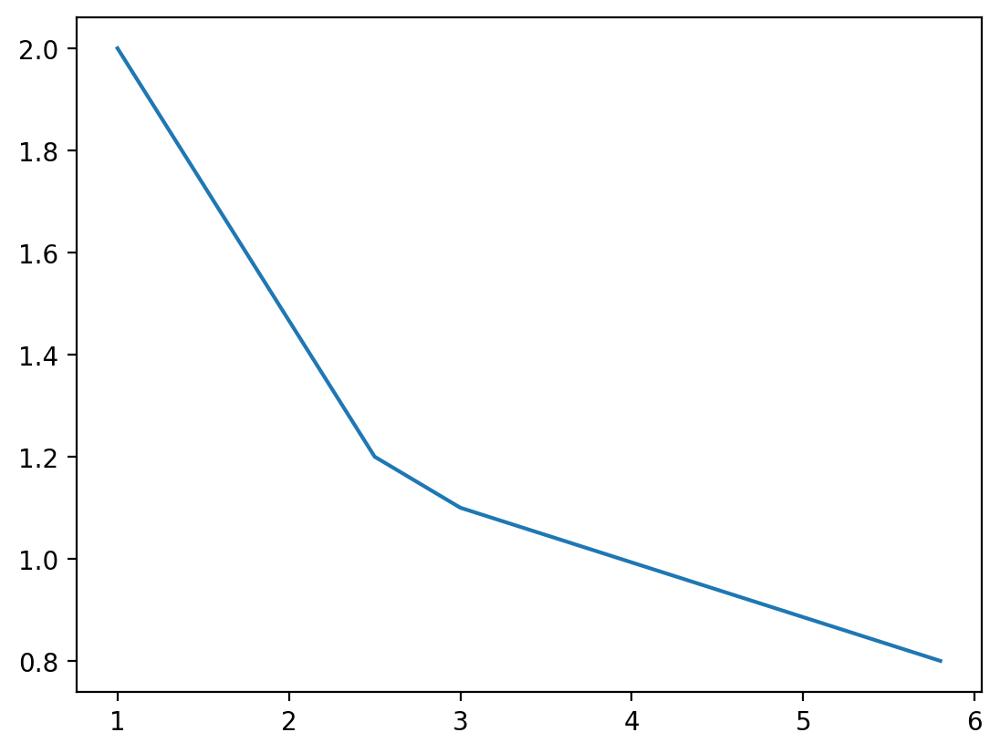
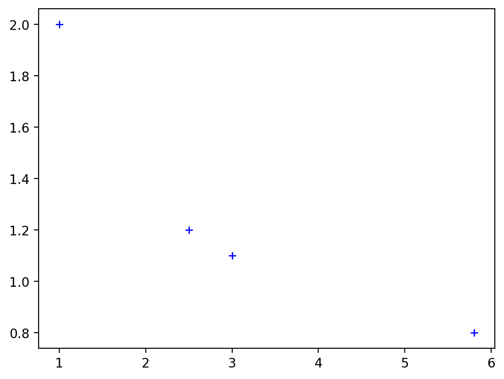
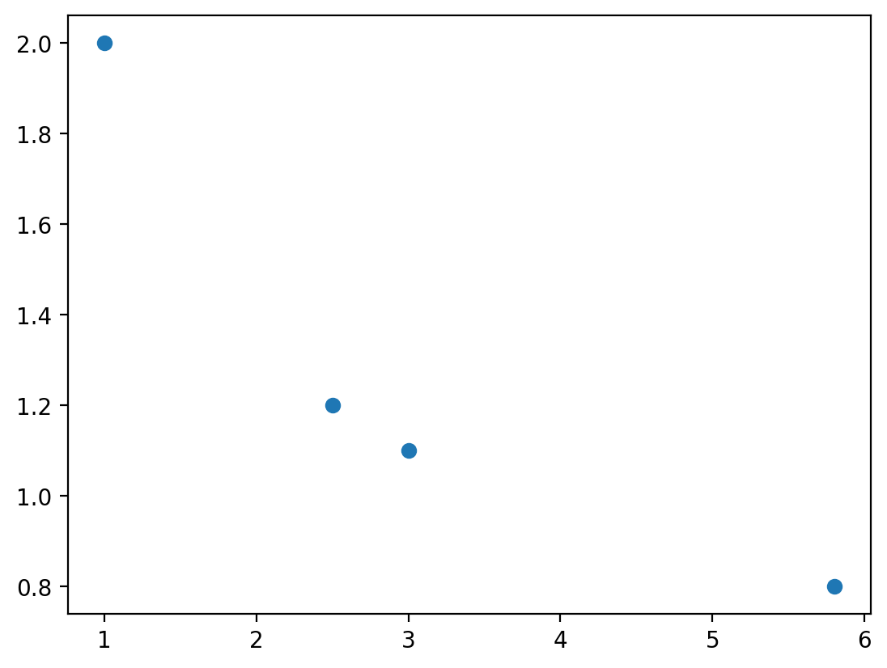
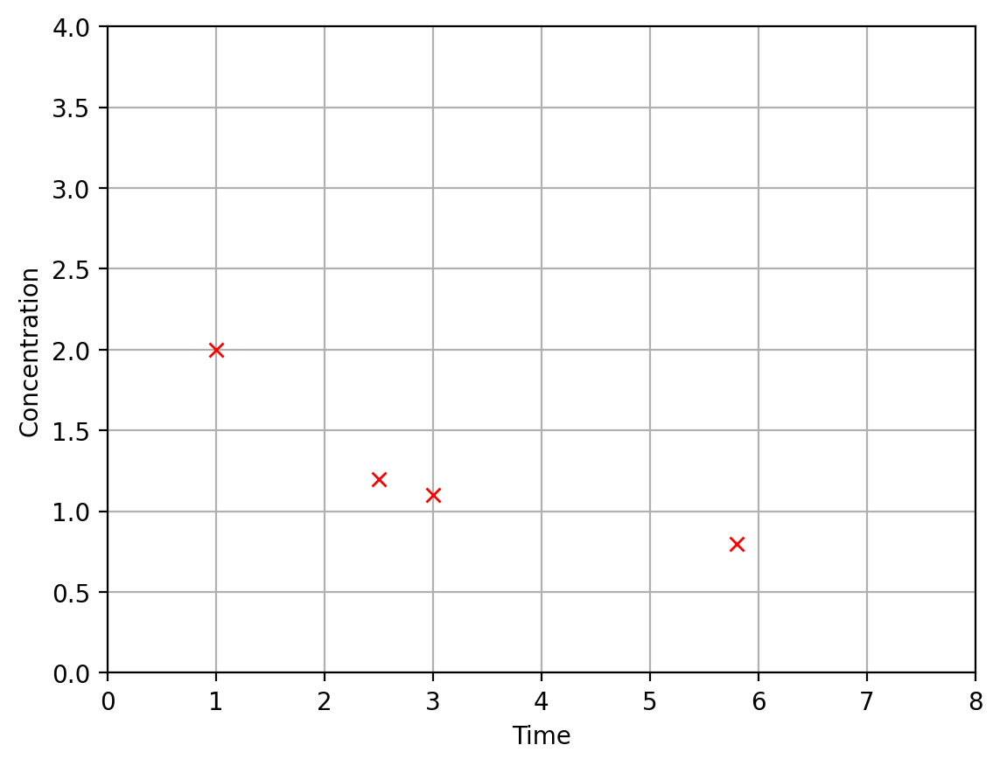
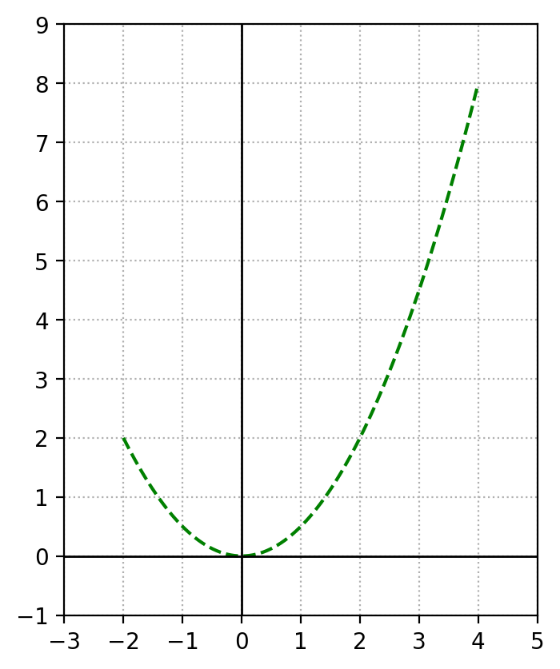

import numpy as np
A = np.array([[1, 2, 3, 4],[-5, -6, -7, -8]])
print(f"행렬 A의 형태는 {A.shape}입니다.")
print(f"행렬 A의 자료형은 {A.dtype}입니다.")행렬 A의 형태는 (2, 4)입니다.
행렬 A의 자료형은 int32입니다.넘파이Numpy는 파이썬으로 수치 계산을 하기 위한 패키지 혹은 라이브러리입니다. 다차원 배열을 효율적으로 구현한 넘파이 배열과 배여 간 빠른 연산을 할 수 있는 연산을 제공합니다. 다차원 배열을 사용해서 선형대수에서 다루는 대규모 행렬등을 활용하여 계산합니다. 따라서 넘파이는 선형 대수학 및 기타 과학 컴퓨팅 영역에 필요한 계산을 수행하는 데 필수적인 파이썬(Python) 패키지입니다. 이와 함께 Matplotlib은 다양한 그래프를 생성하기 위한 Python 패키지입니다. 선형 대수학에서 접하게 되는 대부분의 계산에는 넘파이가 사용되지만, 개념을 시각적으로 유용하게 표현하기 위해서만 Matplotlib을 활용하는 것을 권장합니다.
선형 대수에서 하는 거의 모든 계산은 숫자를 행렬 형태로 다루는 연산이 포함됩니다. 행렬은 행과 열로 구성되어 있으며, 직사각형 혹은 정사각형으로 이루는 숫자 혹은 문자의 집합입니다.
\[ \begin{matrix} \left[ \begin{array}{rrrr} 1 & 2 & 3 & 4 \\ -5 & -6 & -7 & -8 \end{array}\right] \end{matrix} \]
행렬은 파이썬의 리스트(List) 객체를 사용하여 표현할 수도 있지만, 넘파이 배열 객체를 사용하겠습니다. 넘파이는 행렬을 표현하는 강력한 방법을 제공합니다. 행렬을 효율적으로 처리하기 위한 많은 내장 도구도 제공합니다. 수학 모듈과 마찬가지로, NumPy를 사용하기 전에 해당 패키지를 사용할 수 있도록 준비되어야 하니다.
넘파이 패키지를 가져오는 방법으로 import numpy as np과 같은 형태의 코드를 사용합니다. 이후 코드에서 넘파이는 np로 축약해서 사용됩니다.
import numpy as np
A = np.array([[1, 2, 3, 4],[-5, -6, -7, -8]])
print(f"행렬 A의 형태는 {A.shape}입니다.")
print(f"행렬 A의 자료형은 {A.dtype}입니다.")행렬 A의 형태는 (2, 4)입니다.
행렬 A의 자료형은 int32입니다.원하는 행렬은 만드는 또 다른 방법은 먼저 하나의 긴 행으로 된 배열을 만든 다음 reshape 함수를 사용하는 것입니다. 대괄호를 추가로 입력하는 것보다 더 편리할 수 있습니다.
B = np.array([1, 2, 3, 4, -5, -6, -7, -8])
print(f"배열 {B}")
C = B.reshape((2,4))
print(f"배열 B에 reshape 함수를 사용하여 만든 2행 4열 행렬 \n {C}")배열 [ 1 2 3 4 -5 -6 -7 -8]
배열 B에 reshape 함수를 사용하여 만든 2행 4열 행렬
[[ 1 2 3 4]
[-5 -6 -7 -8]]기존 행렬의 데이터를 유지하면서 수정하고 해야 할 때는 copy 함수를 사용하면 됩니다.
D = np.copy(A)
print(D)[[ 1 2 3 4]
[-5 -6 -7 -8]]행렬의 개별 항목에 접근하기 위해서는 행과 열을 기반으로 인덱스(index)를 사용하면 됩니다. 다른 언어와 마찬가지로 Python에서도 배열 또는 행렬의 인덱스는 0부터 시작합니다! 즉, 첫 번째 행은 인덱스가 0이고 두 번째 행은 인덱스가 1이라는 뜻입니다. 열도 마찬가지입니다. 0에서 카운트를 시작하는 것은 어렵지 않지만, 프로그래밍을 처음 접하는 사람이라면 해당 부분은 항상 주의해야 합니다.
print(A[0,2]) # 1행 3열의 원소는 `3`3인덱스를 사용하면 행렬의 원소에 새로운 값을 수정(정확히는 할당) 할 수 있습니다.
A[0,2] = 8
print(A)[[ 1 2 8 4]
[-5 -6 -7 -8]]넘파이를 사용하면 파이썬만 사용하는 것에 비해서 적은 수의 코드를 사용할 수 있으며, 빠르게 연계할 수 있습니다. 예를 들어 두 개의 행렬을 더하는 연산을 하기 위해선 파이썬의 리스트를 사용한다고 가정하면 아래와 같이 개별 원소의 합을 별도로 해줘야 합니다.
T = []
for a, b in zip(A,D):
T.append(a+b)
print(T)[array([ 2, 4, 11, 8]), array([-10, -12, -14, -16])]넘파이는 개별 원소끼리 연산(element-wise)하는 벡터라이제이션(vectorization)을 지원하기 때문에 별도의 반복문을 사용하지 않고도 빠르게 연산할 수 있습니다.
T = A + D
print(T)[[ 2 4 11 8]
[-10 -12 -14 -16]]따라서 가능하면 넘파이 배열을 사용해서 행렬을 생성하는 방법을 다양하게 익혀둬야 합니다.
파이썬의 리스트를 사용하면 최댓값, 최소값, 총합, 평균 등을 구할 수 있습니다. 따라서 넘파이 배열도 해당 연산이 제공됩니다. 예를 들어 X 행렬의 합을 구해보도록 하겠습니다.
print(f"D 행렬은 다음과 같습니다. \n {D}")
print(f"D 행렬의 총합은 {D.sum()} 입니다.")D 행렬은 다음과 같습니다.
[[ 1 2 3 4]
[-5 -6 -7 -8]]
D 행렬의 총합은 -16 입니다.만약, 각 행의 합계가 필요하다면 덧셈의 방향을 axis 인자로 지정하면 됩니다. axis=0이면 열 방향으로 연산이 진행되고, axis=1이면 행 방향으로 연산이 진행됩니다.
print(f"D 행렬은 다음과 같습니다. \n {D}")
print(f"D 행렬의 각 열의 합은 {D.sum(axis=0)} 입니다.")
print(f"D 행렬의 각 행의 합은 {D.sum(axis=1)} 입니다.")D 행렬은 다음과 같습니다.
[[ 1 2 3 4]
[-5 -6 -7 -8]]
D 행렬의 각 열의 합은 [-4 -4 -4 -4] 입니다.
D 행렬의 각 행의 합은 [ 10 -26] 입니다.행렬의 데이터 개수를 알고 있을 때 사용할 수 있는 함수들입니다. 행렬의 크기와 원소의 자료형을 알고 있다면 아래 행렬을 생성하는 함수를 활용하세요.예를 들어, 모든 원소의 성분이 \(0\)으로 구성된 행렬을 만들어야 할 때, 아래와 같이 zeros 함수를 사용하면 됩니다.
# 모든 원소 성분이 0인 4x4 행렬을 만듭니다.
Z = np.zeros((4,4))
# 주 대각선의 원소를 2로 수정합니다.
for i in range(4):
Z[i,i] = 2
print(Z)[[2. 0. 0. 0.]
[0. 2. 0. 0.]
[0. 0. 2. 0.]
[0. 0. 0. 2.]]반면 모든 원소의 값이 \(1\)로 되어 있는 행렬은 ones로 생성할 수 있습니다.
# 모든 원소 성분이 1인 4x4 행렬을 만듭니다.
D1 = np.ones((4,4))
print(D1)
# 모든 원소 성분이 정수 1로 되어있는 4x4 행렬을 만듭니다.
D2 = np.ones((4,4), dtype=int)
print(D2)[[1. 1. 1. 1.]
[1. 1. 1. 1.]
[1. 1. 1. 1.]
[1. 1. 1. 1.]]
[[1 1 1 1]
[1 1 1 1]
[1 1 1 1]
[1 1 1 1]]empty 함수는 초기화되지 않은 행렬을 생성하는데, 위 두 함수와 달리 원소 값을 초기화하지 않았기 때문에 생성속도가 월등히 빠르다. 하지만, 최기화되지 않았기 때문에 행렬에 어떤 값이 포함될지 예상할 수 없다.
# 모든 원소 성분이 1인 4x4 행렬을 만듭니다.
D3 = np.empty((6,6))
print(D3)[[6.74187538e-312 1.19069821e-321 0.00000000e+000 0.00000000e+000
3.56043053e-307 1.16097020e-028]
[1.26104862e-076 3.05354689e-028 5.87795379e-062 1.04917183e-153
5.23081515e-143 2.31954374e-056]
[4.88960151e-033 5.09713558e-066 9.13448631e+169 4.97056709e-143
3.59751658e+252 1.46901661e+179]
[8.37404147e+242 4.31999013e-096 4.82337723e+228 1.08497869e-042
5.39100991e-062 4.75877122e-090]
[1.35021710e+161 7.95965567e-042 5.04621343e+180 1.94918963e-153
5.63882874e-062 2.34053607e-057]
[4.23261110e+175 7.46186814e-038 1.04915259e-153 9.08366791e+223
5.82381891e-144 8.34455804e-308]]선형대수를 학습하는 과정에서 다양한 관찰을 할 필요가 있습니다. 이 때는 다양한 형태의 행렬이 필요합니다. 다양한 선형대수의 특징을 관찰하기 위해서 무작위 행렬을 작성하기 위한 방법이 필요합니다. 넘파이에 포함된 random 모듈의 함수를 사용하면 됩니다. 예를 들어, rand 함수를 사용하여 \(0\)과 \(1\) 사이의 난수를 사용한 실수를 생성할 수 있습니다.
r = np.random.rand()
print(r)0.46857926137143957rand 함수를 실행할 때마다 새로운 난수를 만듭니다. 행렬을 쉽게 만들기 위해서는 rand 함수에 매개변수로 행과 열을 지정하면 됩니다. 행과 열을 지정하기 위해서는 두 개의 매개변수가 필요합니다.
D4 = np.random.rand(3,3)
print(D4)[[0.33232013 0.06115264 0.93226655]
[0.9993063 0.44515188 0.57334052]
[0.18660739 0.6915238 0.88337909]]행렬의 연산을 관찰하는 과정에서 실수가 아닌 정수로 이루어진 행렬이 필요하다면, randint 함수를 사용하면 됩니다. 정수의 특성상 상한을 정하는 매개변수 1개가 반드시 필요합니다.
print(np.random.randint(20))0무작위 배열을 생성하려면 size라는 키워드 인자(keyword arguments)를 사용하여 행과 열의 개수를 지정해야 합니다. 키워드 인수의 사용법은 아래 코드로 확인할 수 있습니다.
D5 = np.random.randint(10,size=(3,3))
print(D5)[[0 8 3]
[0 7 2]
[1 0 8]]참고로 파이썬의 함수에서 키워드 인자를 사용하는 경우가 많습니다. 키워드 인자를 사용하면 순서대로 함수 인자를 활용하지 않아도 된다는 점 입니다. 무엇보다 함수를 읽기 쉽다는 점도 한 몫 합니다.
print(np.random.randint(size=(3,3),high=10,low=1))[[4 6 3]
[9 5 9]
[2 2 1]]또한 random 모듈에는 지정된 목록(List)에서 무작위로 선택된 값을 생성할 수 있는 choice라는 함수가 있습니다. 이 함수는 숫자 목록을 인수로 받아 해당 목록에서 무작위로 선택된 값을 반환합니다.
x = np.random.choice([0,1,3,31])
print(x)3또한 choice 함수를 사용하여 지정된 목록 값으로 구성된 행렬을 생성할 수 있습니다. 행렬은 size 인자를 사용하면 됩니다.
D6 = np.random.choice([0,1,3,31], size = (3,3))
print(D6)[[ 3 31 1]
[ 0 1 31]
[31 31 3]]# 0에서 10까지 정수 중에서 마지막 값이 포함되지 않은 1차원 배열을 만듭니다.
# 이 때, 간격은 1씩 증가합니다.
E1 = np.arange(10)
print(E1)[0 1 2 3 4 5 6 7 8 9]# 0에서 100까지 정수 중에서 마지막 값이 포함되지 않은 1차원 배열을 만듭니다.
# 이 때, 간격은 10씩 증가합니다.
E2 = np.arange(0,100,10)
print(E2)[ 0 10 20 30 40 50 60 70 80 90]# 0에서 10까지 정수 중에서 마지막 값이 포함된 1차원 배열 50개를 만듭니다.
# 이 때, 간격은 균등합니다.
E3 = np.linspace(0,10)
print(E3)[ 0. 0.20408163 0.40816327 0.6122449 0.81632653 1.02040816
1.2244898 1.42857143 1.63265306 1.83673469 2.04081633 2.24489796
2.44897959 2.65306122 2.85714286 3.06122449 3.26530612 3.46938776
3.67346939 3.87755102 4.08163265 4.28571429 4.48979592 4.69387755
4.89795918 5.10204082 5.30612245 5.51020408 5.71428571 5.91836735
6.12244898 6.32653061 6.53061224 6.73469388 6.93877551 7.14285714
7.34693878 7.55102041 7.75510204 7.95918367 8.16326531 8.36734694
8.57142857 8.7755102 8.97959184 9.18367347 9.3877551 9.59183673
9.79591837 10. ]# 0에서 10까지 정수 중에서 마지막 값이 포함된 1차원 배열 5개를 만듭니다.
# 이 때, 간격은 균등합니다.
E4 = np.linspace(0,10,5)
print(E4)[ 0. 2.5 5. 7.5 10. ]앞서 확인했던 reshape을 사용하면 배열을 행렬로 손쉽게 변경할 수 있습니다.
# 16개의 원소를 가진 1차원 배열을 만듭니다.
X = np.arange(16)
print(f"X = {X}")
X1 = X.reshape(-1,8)
print(f"X1 = {X1}")
X2 = X.reshape(8,-1)
print(f"X2 = {X2}")
X3 = X.reshape(2,8)
print(f"X3 = {X3}")
X4 = X.reshape(8,2)
print(f"X4 = {X4}")X = [ 0 1 2 3 4 5 6 7 8 9 10 11 12 13 14 15]
X1 = [[ 0 1 2 3 4 5 6 7]
[ 8 9 10 11 12 13 14 15]]
X2 = [[ 0 1]
[ 2 3]
[ 4 5]
[ 6 7]
[ 8 9]
[10 11]
[12 13]
[14 15]]
X3 = [[ 0 1 2 3 4 5 6 7]
[ 8 9 10 11 12 13 14 15]]
X4 = [[ 0 1]
[ 2 3]
[ 4 5]
[ 6 7]
[ 8 9]
[10 11]
[12 13]
[14 15]]reshape을 사용하게 되면 원본 행렬과 데이터를 공유해서 사용하게 되니, 가능하면 copy 함수를 사용해서 별도의 행렬로 복사해서 사용하도록 하세요.
X = np.arange(16)
print(f"X = {X}")
X1 = X.reshape(-1,8)
print(f"X1 = {X1}")
X1[0,0] = 100
print(f"X = {X}")X = [ 0 1 2 3 4 5 6 7 8 9 10 11 12 13 14 15]
X1 = [[ 0 1 2 3 4 5 6 7]
[ 8 9 10 11 12 13 14 15]]
X = [100 1 2 3 4 5 6 7 8 9 10 11 12 13 14 15]X = np.arange(16)
print(f"X = {X}")
X1_copy = X.reshape(-1,8).copy()
print(f"X1_copy = {X1_copy}")
X1_copy[0,0] = 100
print(f"X = {X}")
print(f"X1_copy = {X1_copy}")X = [ 0 1 2 3 4 5 6 7 8 9 10 11 12 13 14 15]
X1_copy = [[ 0 1 2 3 4 5 6 7]
[ 8 9 10 11 12 13 14 15]]
X = [ 0 1 2 3 4 5 6 7 8 9 10 11 12 13 14 15]
X1_copy = [[100 1 2 3 4 5 6 7]
[ 8 9 10 11 12 13 14 15]]revel 함수는 반대로 행렬을 배열로 변경합니다. 이 함수도 원본과 데이터를 공유하기 때문에 copy 함수를 사용하세요.
X = np.array([[1,2,3],[4,5,6]])
print(f"X = {X}")
X1 = X.ravel()
print(f"X1 = {X1}")
X2 = X.ravel().copy()
print(f"X2 = {X2}")X = [[1 2 3]
[4 5 6]]
X1 = [1 2 3 4 5 6]
X2 = [1 2 3 4 5 6]X = np.array([[1,2],[3,4]])
Y = np.array([[5,6],[7,8]])
print(f"X+Y = {X+Y}") # 행렬 덧셈
print(f"X-Y = {X-Y}") # 행렬 뺄셈
print(f"X*Y = {X*Y}") # 행렬 곱셈이 아닌 원소별 곱셈
print(f"X/Y = {X/Y}") # 행렬 나눗셈
print(f"X@Y = {X@Y}") # 행렬 곱셈X+Y = [[ 6 8]
[10 12]]
X-Y = [[-4 -4]
[-4 -4]]
X*Y = [[ 5 12]
[21 32]]
X/Y = [[0.2 0.33333333]
[0.42857143 0.5 ]]
X@Y = [[19 22]
[43 50]]Matplotlib은 다양한 플로팅 기능과 생성된 그림을 정밀하게 사용자 정의할 수 있는 다양한 옵션을 제공합니다. 이 문서는 필요한 코드에 대한 몇 가지 세부 사항을 제공하지만 데이터 구조를 엄격하게 설명하거나 라이브러리 내에서 사용할 수 있는 다양한 옵션에 대해 논의하지는 않습니다.
첫 번째 그림에서는 \((x,y)\) 좌표가 있는 네 점의 간단한 플롯을 만들겠습니다. 좌표 목록은 NumPy 배열에 저장됩니다.
x = np.array([1, 2.5, 3, 5.8])
y = np.array([2, 1.2, 1.1, 0.8])다음 코드에는 그래프를 생성하는 데 필요한 최소한의 지침이 포함되어 있습니다.
import matplotlib.pyplot as plt
%config InlineBackend.figure_format = 'retina'
fig, ax = plt.subplots()
ax.plot(x,y);
subplots 메서드는 fig과 ax이라는 두 개의 Matplotlib 객체를 생성합니다. fig은 Matplotlib의 기본 객체입니다. ax 객체는 fig 안에 포함되어 있으며, 우리가 가장 많이 상호작용할 객체입니다. ax 객체의 plot 메서드는 실제로 좌표 집합을 ax에 그림을 그리는 함수입니다.
Matplotlib 메서드(그리고 실제로 다른 많은 파이썬 라이브러리의 메서드)는 최소한의 인수를 제공하여 생성되는 기본 기능을 가지고 있지만, 이 기본 기능을 변경하는 추가 인수를 제공할 수 있는 것이 일반적입니다. 이 예제에서는 plot 메서드에 선택적 인수 b+를 제공하여 데이터 좌표를 연결하는 선 대신 파란색 + 기호가 있는 플롯을 생성할 수 있습니다.
fig, ax = plt.subplots()
ax.plot(x,y,'b+');
데이터 요소를 플로팅하는 데 관심이 있는 경우 또 다른 대안은 동일한 구문을 사용할 수 있는 scatter 메서드입니다.
fig, ax = plt.subplots()
ax.scatter(x,y);
다음은 이러한 플롯에서 사용할 수 있는 여러 옵션 중 일부를 구성하는 방법을 보여드리겠습니다. 플롯은 실제로 축 객체에서 구성되므로 플롯의 요소에 영향을 주는 모든 옵션은 해당 객체의 메서드라는 점을 기억하세요.
fig, ax = plt.subplots()
ax.plot(x,y,'rx');
ax.set_xlim(0,8);
ax.set_ylim(0,4);
ax.grid(True);
ax.set_xlabel('Time');
ax.set_ylabel('Concentration');
다음 예제에서는 \([-2,4]\) 간격의 \(x\)에 대한 곡선 \(y=0.5x^2\)를 플롯하는 것이 목표입니다. 동일한 방법을 사용하려면 주어진 간격에서 \(x\)에 대해 곡선 위에 놓이는 점 집합을 생성해야 합니다. 지정하는 점들은 직선으로 연결되므로 곡선이 들쭉날쭉한 모양이 되지 않도록 충분한 점을 생성해야 합니다. NumPy 메서드 \(\texttt{linspace}\)는 점을 쉽게 생성할 수 있는 방법을 제공합니다. 이 메서드는 지정된 간격으로 숫자가 균등하게 배치된 NumPy 배열 객체를 생성합니다.
x = np.linspace(-2,4,9)
print(x)
y = 0.5*x**2
print(y)[-2. -1.25 -0.5 0.25 1. 1.75 2.5 3.25 4. ]
[2. 0.78125 0.125 0.03125 0.5 1.53125 3.125 5.28125 8. ]이 플롯에서는 매끄럽게 보이는 곡선을 생성하기 위해 더 많은 수의 점을 사용합니다. 또한 \(x\) 및 \(y\) 축을 따라 ticks을 구성하는 등 몇 가지 다른 옵션을 사용하여 이 플롯의 모양을 조정합니다. 눈금은 축을 따라 격자선과 숫자 레이블을 정의하는 숫자 목록입니다. plot 메서드는 ticks의 기본값을 제공하며, 새 값의 배열을 제공하여 변경할 수 있습니다.
x = np.linspace(-2,4,100)
y = 0.5*x**2
fig, ax = plt.subplots()
ax.plot(x,y);
ax.set_xlim(-2,4);
ax.set_ylim(0,8);
ax.grid(True,ls='dotted');
ax.set_aspect('equal');
ax.set_xticks(np.linspace(-2,4,4));
ax.set_yticks(np.linspace(0,8,5));
fig, ax = plt.subplots()
ax.plot(x,y,'g',ls='dashed');
ax.set_xlim(-3,5);
ax.set_ylim(-1,9);
ax.grid(True,ls='dotted');
ax.set_aspect('equal');
ax.set_xticks(np.linspace(-3,5,9));
ax.set_yticks(np.linspace(-1,9,11));
ax.axvline(color='k',linewidth = 1);
ax.axhline(color='k',linewidth = 1);